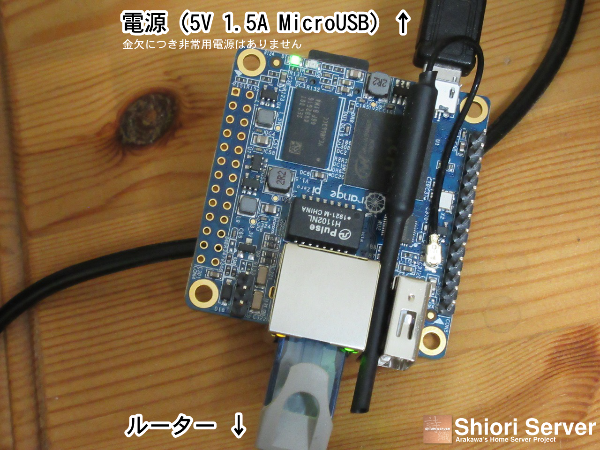
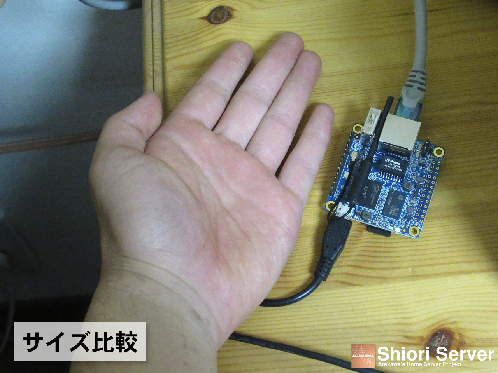
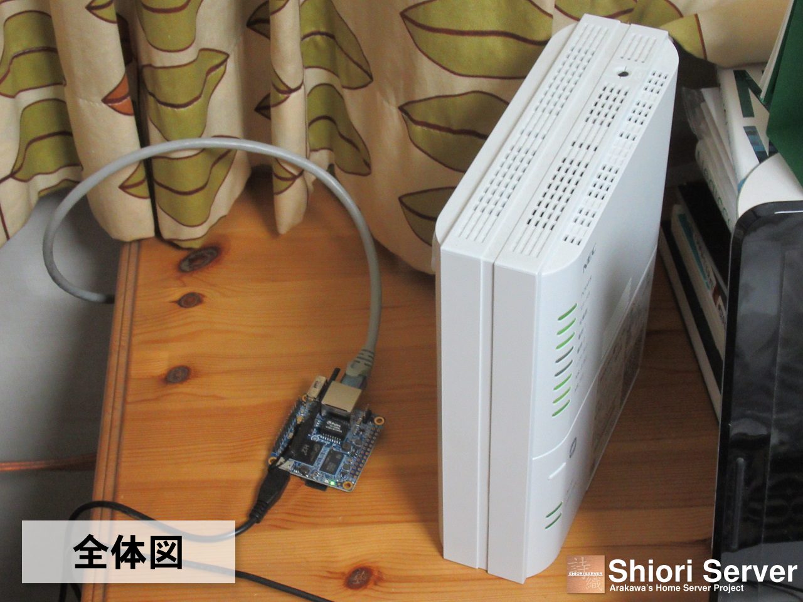

Shiori Server (詩織サーバ) は、Arakawa
Laboratoryが管理する自宅サーバです。
以下のページがShiori Server上で動作しています。
・ Shiori Server (このページ)
・ 三菱 ミニカ H42V
・ 荒川の同人活動
| 2022/07/23 | Chifuyu Serverへのウェブサーバ機能移転に伴い、運用を一時停止。 |
|---|---|
| 2022/03/06 | 「Shiori Server Status」のページを公開 |
| 2022/02/09 | 静岡県浜松市でサーバ運用を再開 |
| 2021/11/24 | ストレージのMicroSDカードを4GBから32GBに変更 |
| 2021/11/08 | 「荒川の同人活動」のページを公開 |
| 2021/10/09 | 引っ越しに伴いサーバ運用を一時停止。ドメインとデータはロリポップ!レンタルサーバに移行 |
| 2021/08/23 |
Arakawa (arkw.work) をarkw.netドメインのレンタルサーバに移動 画像、CSSコード、JavaScriptコードは引き続きShiori Serverから配信 |
| 2021/02/20 | 「三菱 ミニカ H42V」のページを公開 |
| 2020/06/06 | 当ウェブページを公開 |
| 2020/05/01 |
Shiori Serverの本運用を開始 Arakawa (arkw.work) ウェブサイトの試験運用を開始 |
| 2020/04/01 | Shiori Serverの試験運用を開始 |
| CPU | Allwinner H2+ 1.2GHz クアッドコア (ARM Cortex-A7) |
|---|---|
| RAM | 256MB |
| ストレージ | KIOXIA EXCERIA 32GB MicroSDカード |
| OS | Armbian buster with Linux 5.4.28-sunxi |
| Webサーバ | lighttpd 1.4.53 |
| PHP | 7.3.14 (Zend Engine導入済み) |
| SSLクライアント | Let's Encrypt |
| ダイナミックDNS | MyDNS.JP |
| リージョン | 愛知県 岡崎市→静岡県 浜松市 |
・ 毎週土曜日 午前2時に自動で再起動します。




最終更新日 : 2023年6月26日
(c) 2020-2023 Sora Arakawa all rights reserved.